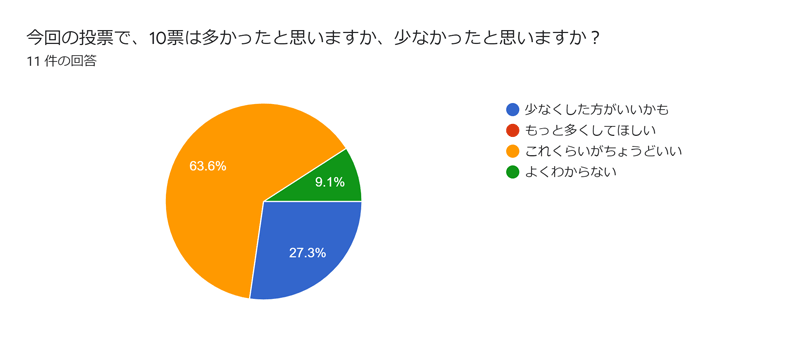
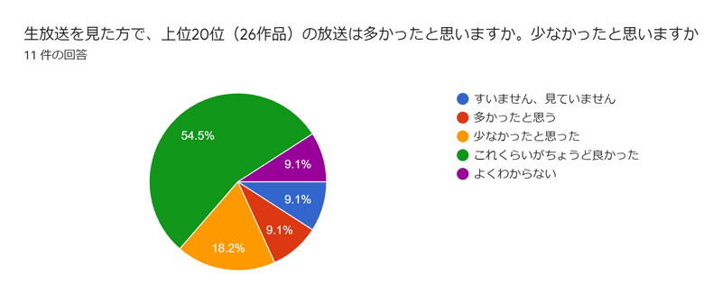

今回の大賞に関してのアンケート結果
今回の大賞に関して、結果発表後アンケートを行いました。11人のご意見がありましたので今後のご参考にしてください


将来、「静止画M@D大賞2020」を主催する方がいらしたら、「ここはこうしたらもっと良かった」と思う所などあれば、お書きください。3 件の回答
以前ので見慣れているからかと思いますが投票履歴が少し見難かった。あれを眺めるのも大賞の醍醐味かなと。
たいへんですね
今回のランキング結果にはあまり満足していませんが、何かいい方法があるとは思いませんでした……（友達と偏見があるからかもしれません（老害発言）（笑
その他、今回の大会に何かご意見ありましたら、お願いいたします5 件の回答
お疲れ様でした。大いに楽しみました。ありがとうございました。
転載された作品と転載元の作品に両方投票された場合、転載元の作品に票数を合算してくれると嬉しいです。
フォームに入力するのが見づらくて割とめんどくさかったです。中国語と日本語の作品は分けないでほしかったです。
生放送はtotoriさんのが多かったから３０～作品くらいでもいい気がした。
もう夢寐も下火なんだなぁと寂しくなりました。ともあれ、集計お疲れ様でした。
次回の大賞を楽しみにしています。またずっと開催してほしいですね。お疲れ様です！